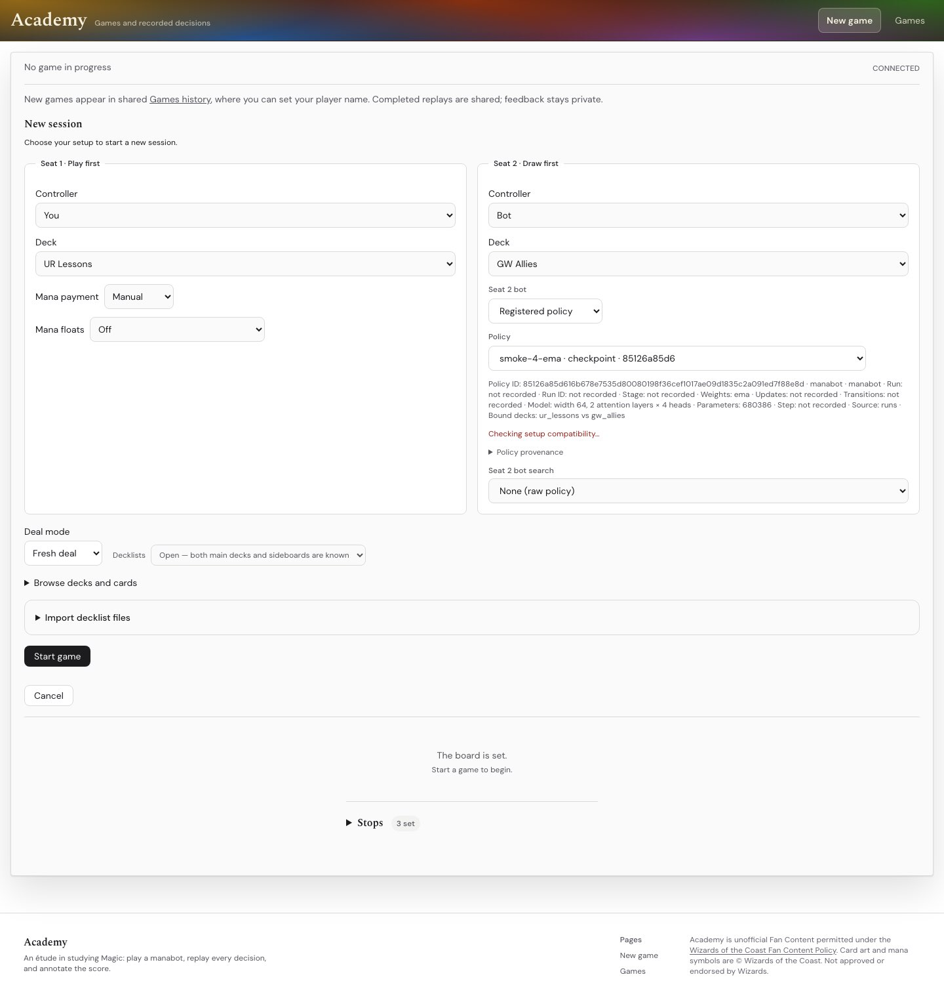
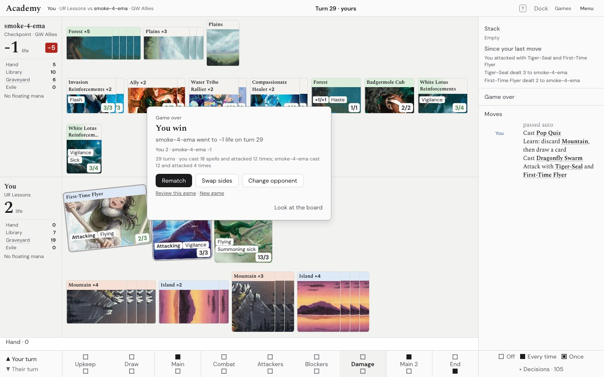
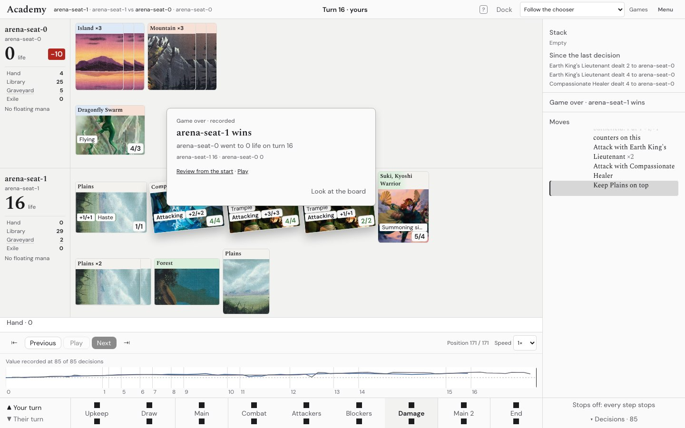
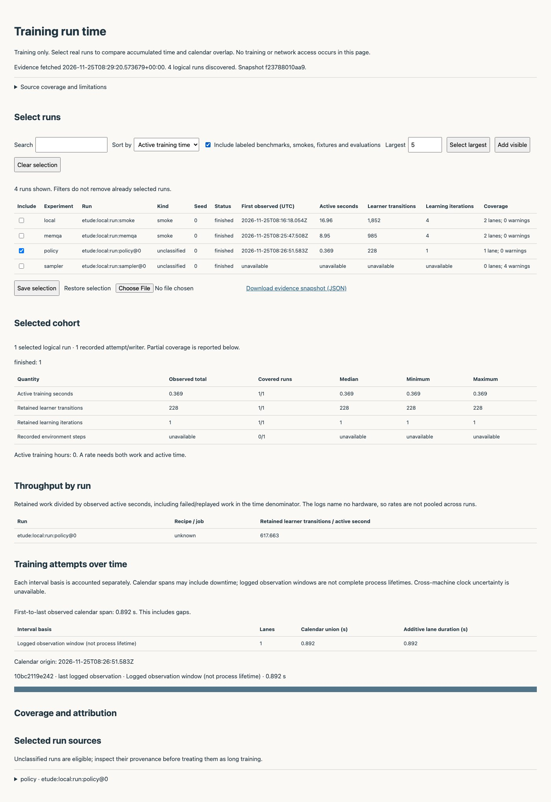

Run at 78a4ede25f on 2026-11-25, on a shared laptop whose load average was 100–240 from other work.
The release extension was rebuilt first because the last compress commit changed Rust after the previous build.
The merge base 3be5a0cfb2 was built in /private/tmp/mtg433-base to supply a returning user's files.
All runs used ETUDE_HOME under .runs/qa/.
| Scenario | What I did | What I saw |
|---|---|---|
| Engine guide examples | Extracted the six python blocks of docs/engine.md#encoded-observations and ran them as written | Printed output matches the guide (7, 7, capacity message, column readings) |
| Batch bytes, corrupt input | to_bytes/from_bytes on a two-row batch; empty, half, one flipped byte, one extra byte | Round trip equal; every corruption raises ValueError ("corrupt or truncated observation batch"); pickle round trip equal |
| Version refusals | ObservationLayout and ObservationConfig with v9, v10, v12 | All refused with the release/revision text. Removed exports (encode_observation_into, input_v10_state, legacy_card_lists, Env.encode_observation) are absent |
| Fresh training | etude train manabot/recipes/local.py --experiment smoke --config '{"record_games":1,"statistics":true}' --until updates=2, then --resume --until updates=4 | Both exit 0 (9 s, 14 s); ten policy files; finite losses |
| Returning user: run written on main | Trained demo to update 2 with the merge base's code, then --resume --until updates=4 here | Resumes; the update-2 policies are byte-identical afterwards |
| Returning user: same checkpoint, both trees | Scored main's update-2 EMA policy on 120 decisions of two seeded games via encode_observation_batch → prepare → evaluate on each tree | Max logit difference 0.0 and value difference 0.0 over 586 legal actions |
| Pinned pilot | tests/model/test_pinned_pilot.py | Passes |
| Sim | manabot sim with the trained checkpoint in both seats, deck files from its world_binding, 4 games | Completes; zero "Error getting action" lines |
| Local evaluation | manabot.eval.local --checkpoint smoke-4-ema --opponent heuristic, two deal seeds; then the v9 pilot as candidate and as opponent | 8/8 games, empty failures/, --status agrees. v9 is refused in both seats with UnsupportedPolicyInput |
| Academy listing | managym academy play with MANABOT_RUNS_DIR holding the v9 pilot, the v11 pilot, the branch's policy and main's policy | The v9 pilot is disabled in the picker with its reason; the others are available |
| Academy game vs policy | Playwright: Set up a different game → Registered policy → smoke-4-ema → Start game; first ready offer each time, reloading after 10 decisions | 106 decisions to "You win" on turn 29 with the reload in the middle; the policy cast, attacked and blocked; no console errors |
| Academy replay of main's record | managym academy replay on the demo run's games, End key | 85 decisions to game over with the value trace |
| Torch vs MLX | Same checkpoint on both backends over 80 live decisions, then one 80-row batch | Max difference 2.4e-7 |
| Decision memory (GRU) | A .runs/ Gray Ogre recipe with decision_memory="gru", two updates plus a resume to four; live play with and without blank_decision_memory() | Trains and resumes. With managym.Env(decision_memory=True), 58/60 decisions differ from the blanked log (about 1e-8, gate near zero). Without that flag the log is empty, as designed |
| Belief recipe | etude train experiments/belief.py twice (policy, then sampler); tests/belief | Both jobs finish. 4 tests fail, and the same 4 fail at the merge base |
| Snapshot self-play | The three docs/training-loop.md snapshot commands, as written | All exit 0; snapshots start at update 3 (4 per update); zero failed branches |
| Installed wheels | Fresh /tmp venvs: engine-only engine_smoke.py plus the engine-only byte round trip; both wheels with torch==2.15.0 CPU and smoke.py | "engine smoke passed: 108 decisions"; "release smoke passed" |
| Training report | manabot training-report over the QA track, benchmarks included | Training runs show numeric learner transitions; the belief sampler shows "unavailable", as expected |
| Local-update search | scripts/bench_local_update.py --worlds 4 on the branch; --reference 3be5a0cfb2; the default mode at base | Branch parity errors are all 0.0. The reference graft can't import across this change, and at base it already failed (manabot.belief.sampling), so there is no cross-tree receipt comparison |
| Merchant-payment reconnect (open in plan) | Ran tests/academy/test_merchant_payment_recovery.py::test_merchant_payment_reconnect_vector_and_fork on both trees | Fails identically at the merge base (sum(agent.mana) == 1, got 0): not caused by this branch |
Picker, with the v9 pilot disabled and its reason shown:

The finished game against the four-update policy, after a mid-game reload:

Main's recorded training game replayed on this branch:

Training report:

No product defects found. QA notes updated: the v9 pilot's source now that the repository no longer holds one;
how to reach the Academy picker from the launch card; scalar decision-memory capture needs decision_memory=True;
bench_local_update --reference can't cross removed imports; the MPS layout note now encodes native batches instead of stacking dense dicts.
v0.2.5 as the last release supporting v9-v10, but v0.2.6 is tagged and still supports them (questions 22). Users see it in Academy, evaluation and load_policy. The plan replaces it with the last 0.2.x tag at merge time.ObservationConfig(policy_input_version=9), and names the v9-v10 release for v12. The wording predates this branch.belief_count_buckets > 0) in a real game. Self-play refuses one, and only ManabotPlayer uses it, with no CLI; tests/belief covers it with the 4 failures from base.